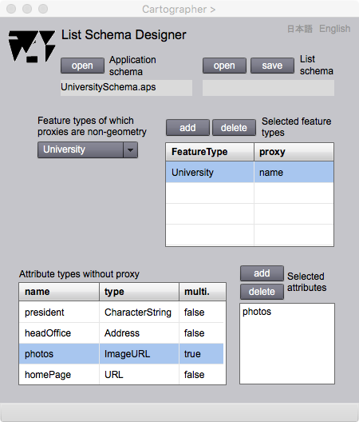

List Schema Designer
リストスキーマ設計
伝統的な地図は二次元のシートの上に描かれた，記号の分布図です．GISの目的の一つに，役に立つ情報を示す地図を作ることがあります．Gittok では，地物のproxy が幾何属性の場合は，地図表現が可能です．しかし，実世界の現象の抽象概念としての地物が必ず，位置や形状をもつとは限りません．例えば，あなたがグローバル企業の社員だとします．誰かから「あなたの会社はどこにありますか？」と聞かれたらどのように応えるでしょうか．あなたは多分「本社は東京にあるけれど，世界中至る所にブランチがあります．ちなみに私はニューヨーク支店に勤めています．」などと応えるでしょう．確かに世界中にあるブランチは，敷地やフロアを示す幾何属性をもつかもしれませんが，それでは会社全体はどのような形をしているのでしょうか．多分このような質問は，質問自体がナンセンスなのではないでしょうか．なぜなら，あなたの会社は，関係者の合意や許可で成立している，抽象的な存在だからです．従って，地球上に存在はしているけれど，幾何属性をもたない地物があってもおかしくはないのです．proxyが，会社名のような文字列属性の場合は，その値の一覧表，言い換えれば一次元の地図が，二次元の地図の代わりになります．
List schema designer は，文字列属性をproxy とする地物のリストを定義するリストスキーマを設計するためにあります．これがあると，幾何属性をproxy としない地物の情報表現ができます．
List Schema Designer

図１．リストスキーマデザイナーのpage
Fields
Application schema
リストスキーマの対象となる応用スキーマの名前が表示されます．
List schema
オープンまたはセーブしたリストスキーマの名前が表示されます．
Feature types with which proxies are non-geometry (選択可能)
選択された，リストスキーマの対象となる地物型の名前が表示されます．
Selected feature types（選択可能）
リストを通じて表示地物型を選択すると，ここに一覧表示されます．
Attribute types without proxy（選択可能）
Selected feature types 一覧上で地物型を選択すると，ここにそれが持つ属性の一覧が表示されます．
Selected attributes (編集可能）
Attribute types without proxy 一覧上で属性型を選択すると， ここに，info. pageとして表示する属性の一覧が表示されます．
Buttons
open (Application schema)
このボタンを押すと，応用スキーマをオープンすることができます．
open (List schema)
このボタンを押すと，リストスキーマをオープンすることができます．
save (List schema)
このボタンを押すと，リストスキーマをセーブすることができます．
add (Selected feature types)
Feature types with which proxies are non-geometryで地物型を選択し，その上でこのボタンを押すと，一覧に選択された地物型の名前が表示されます．さたに，一覧の中から適当な地物型を選択すると，Attribute types without proxy 一覧に，その地物型がもつ属性型の一覧が表示されます．
delete (Selected feature types)
Selected featyre types 一覧上で地物型を選択して，このボタンを押すと，一覧から，その地物型が削除されます．
add (Selected attributes)
Attribute types without proxy 一覧で，表示の対象となる属性型を選択してから，このボタンを押すと，表示可能な属性として追加されます．
delete (Selected attributes)
上のリスト上で削除する地物型を選択してから，このボタンを押すと，その属性は表示不可能になりSelected attributesのリストから消去されます．
日本語
今あなたが読んでいるドキュメントが表示されます．
English
You can read the tutorial written in English.